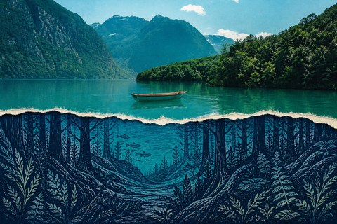

独立创作者的灵感索引
收录影像、设计与动态创作的方法。从一件好作品，找到下一次创作的起点。
作者公开示例 · 效果展示不代表本站复现
THE INDEX / 作品与方法

A PERSONAL COLLECTION
我是 fledgling-david，这里是我收集创作方法的地方。图像、纸张、镜头和节奏——从作者作品出发，整理值得继续探索的 Skill。
效果图为作者公开示例，未由本站逐项复现。
搜索本次小样的 8 件作品。完整内容请进入正式版。
作品浏览需要 JavaScript。进入正式版 ↗